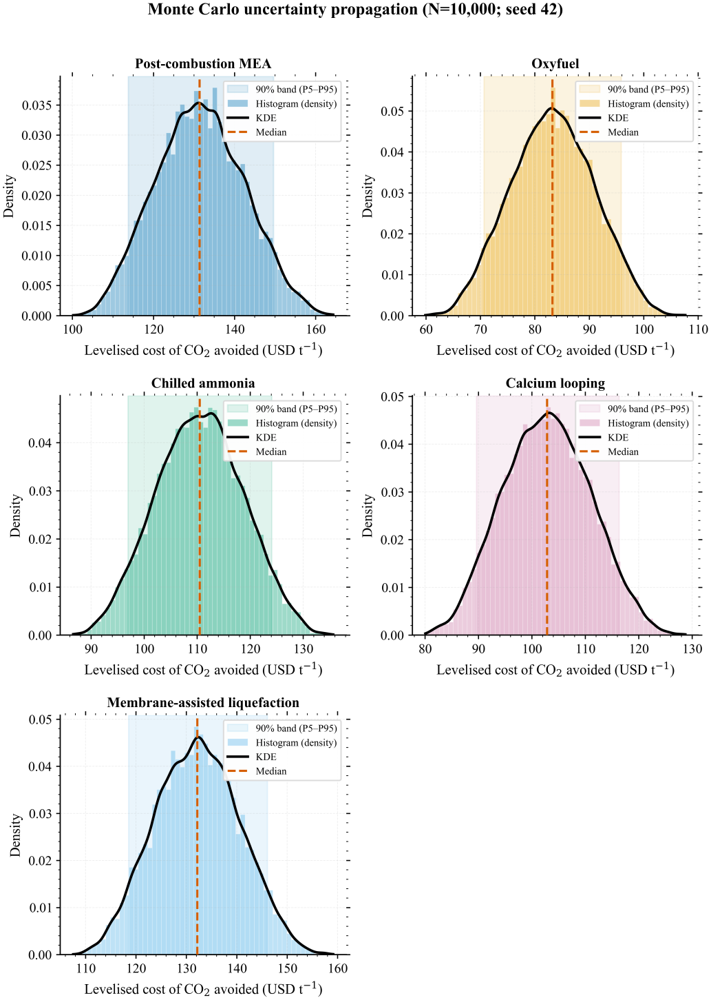
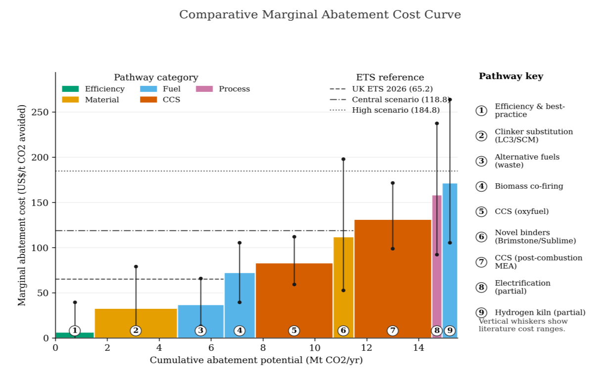
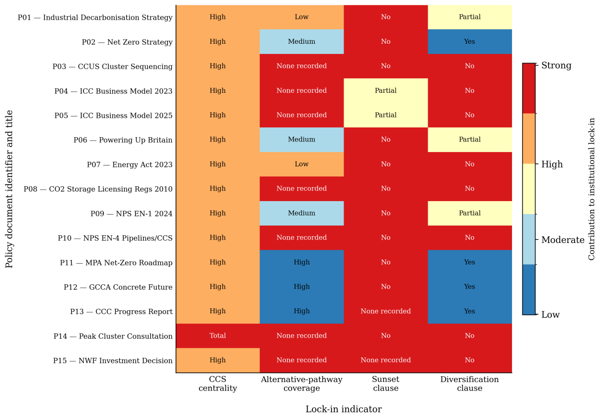
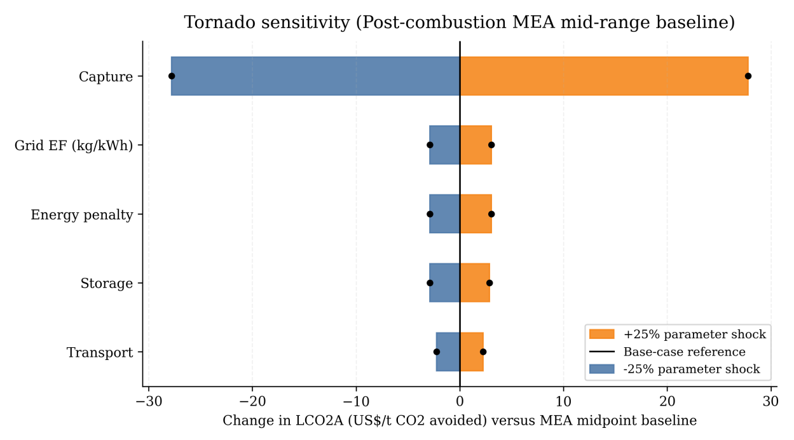
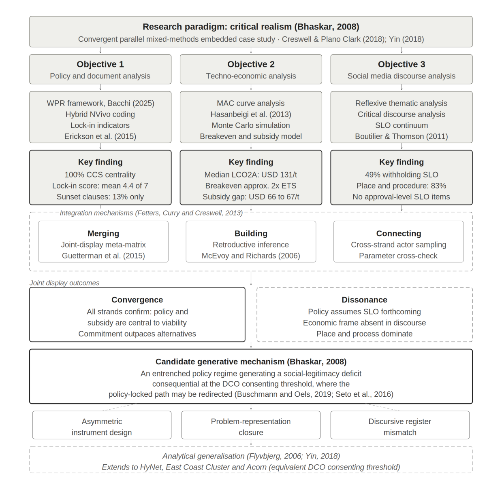

Peak Cluster CCS — United Kingdom

{kind=link}

{kind=link}

{kind=link}

{kind=link}

{kind=link}

Documents for download
Two-page findings note (Arial). Full MESPOM consortium. Word
Examined abstract with Erasmus Mundus affiliation. Word
Python pipeline (numpy / pandas / matplotlib), seed 42.
Related publications
- Saber, M., Posite, V. R., Abdulai, A., et al. (2026). Climate change hotspots in Africa: rainfall, temperature and drought trends. Journal of Earth System Science, 135, 187. doi:10.1007/s12040-026-02867-4
- Saber, M., Koroma, A., Posite, R. V., Ly, A., Tejan Bah, A. M., Abdulai, A., et al. (2025). Climate change adaptation and disaster risk reduction in Africa. Journal of Water and Climate Change, 16(5), 1831–1862. doi:10.2166/wcc.2025.741
- Siddique, H. A., Kanagie, A., & Abdulai, A. (2024). Echoes of the past: Power and colonial impact on contemporary climate politics. In Climate change and environmental politics (pp. 141–166). Transnational Press London.
Policy brief — drought and food security, northern Ghana · Publications list · Publication plan
Training, posters & awards
University of the Aegean — research poster
Mapped temperature, precipitation and “dryness” shifts (Köppen–Geiger + trend detection; RCP 4.5 / 8.5).
Temperature R²=0.93; dryness R²=0.66. Built ArcGIS Model Builder + Python pipeline structure.
Youth Challenge International (HerStart) — training & mentoring
Delivered climate action and green entrepreneurship to 300+ youth.
Facilitated 15 multi-stakeholder workshops; mentored 10+ mentees toward HerStart Catalyst Funding.
Entrepreneurship & innovation awards
Schneider Electric Go Green Challenge — Global Winner (2025): technical lead; €6,000 + mentorship.
Geneva Challenge — 2nd globally / 1st in Africa (2023). Stanford Global Sustainability Challenge — Top 6 (2026), Jury Award for Strategic Thinking.
PAUWES thesis (public chart)

Conceptual blockchain-backed carbon market architecture for Africa: DFE + DEMATEL feeding a UNFCCC-aligned infrastructure blueprint, with UNFCCC RCC (Kampala) and CYNK (Kenya) as study areas.